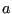
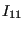
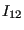
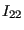

Next: *BOUNDARY Up: Input deck format Previous: *BASE MOTION Contents
Keyword type: model definition
This option is used to assign material properties to beam element sets. The parameters ELSET, MATERIAL and SECTION are required, the parameters ORIENTATION, OFFSET1, OFFSET2 and NODAL THICKNESS are optional. The parameter ELSET defines the shell element set to which the material specified by the parameter MATERIAL applies. The parameter ORIENTATION allows to assign local axes to the element set. If activated, the material properties are applied to the local axis. This is only relevant for non isotropic material behavior.
The parameter SECTION defines the
cross section of the beam and takes the value RECT for a
rectangular cross section, CIRC for an elliptical cross section, PIPE for a pipe cross
section, BOX for a box cross section and GENERAL for a section defined by its
area and moments of intertia. A
rectangular cross section is defined by its thickness in two
perpendicular directions, an elliptical cross section is defined by
the length of its principal axes. These directions are defined by
specifying direction 1 on the third line of the present keyword card. A pipe cross section is defined by its outer radius (first parameter) and its thickness
(second parameter). A box cross section is defined by the parameters
, ,
, ,
, ,
, and (cf. Figure 81, is in the local
1-direction,
and (cf. Figure 81, is in the local
1-direction,  is in the local 2-direction (perpendicular to the local 1-direction),
is in the local 2-direction (perpendicular to the local 1-direction),  is the thickness in the positive local 1-direction and so on).
is the thickness in the positive local 1-direction and so on).
Notice that, internally, PIPE and BOX cross sections are expanded into beams with a rectangular cross section (this is also the way in which the beam is stored in the .frd-file and is visualized in the postprocessor. The actual cross section is taken into account by appropriate placement of the integration points). This rectangular cross section is the smallest section completely covering the PIPE or BOX section. For instance, for a pipe section the expanded section is square with side length equal to the outer diameter. For the expansion the local direction 1 and 2 are used, therefore, special care should be taken to define direction 1 on the second line underneath the *BEAM SECTION card. The default for direction 1 is (0,0,-1).
The GENERAL section can only be used for user element type U1 and is defined
by the cross section , the moments of inertia ,  and
 and the Timoshenko shear coefficient  . The PIPE, BOX and GENERAL
cross section are described in detail in Section 6.3.
. The PIPE, BOX and GENERAL
cross section are described in detail in Section 6.3.
The OFFSET1 and OFFSET2 parameters indicate where the axis of the beam is in relation to the reference line defined by the line representation given by the user. The index 1 and 2 refer to the local axes of the beam which are perpendicular to the local tangent. To use the offset parameters direction the local directions must be defined. This is done by defining local direction 1 on the third line of the present keyword card. The unit of the offset is the thickness of the beam in the direction of the offset. Thus, OFFSET1=0 means that in 1-direction the reference line is the axis of the shell, OFFSET2=0.5 means that in 2-direction the reference line is the top surface of the beam. The offset can take any real value and allows to construct beam of nearly arbitrary cross section and the definition of composite beams.
The parameter NODAL THICKNESS indicates that the thickness for ALL nodes in the element set are defined with an extra *NODAL THICKNESS card and that any thicknesses defined on the *BEAM SECTION card are irrelevant.
First line:
Second line:
Third line:
Example: *BEAM SECTION,MATERIAL=EL,ELSET=Eall,OFFSET1=-0.5,SECTION=RECT 3.,1. 1.,0.,0.
assigns material EL to all elements in (element) set Eall. The reference line is in 1-direction on the back surface, in 2-direction on the central surface. The thickness in 1-direction is 3 unit lengths, in 2-direction 1 unit length. The 1-direction is the global x-axis.
Example files: beamcom, beammix, shellbeam, swing, simplebeampipe1,simplebeampipe2,simplebeampipe3,simplebeampipe4.